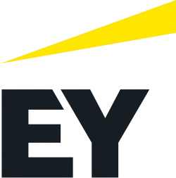
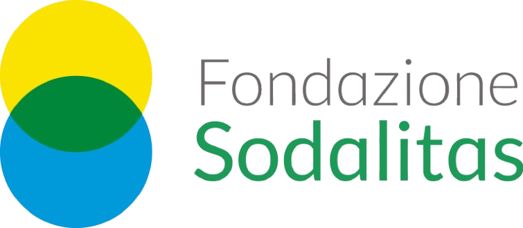
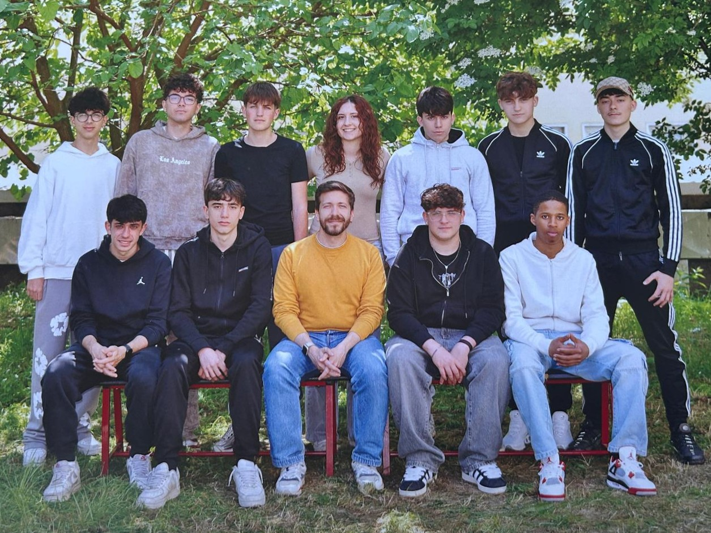

Classe 4DT - ITI P. Hensemberger
Siamo la classe 4DT - Telecomunicazioni dell'ITI P. Hensemberger di Monza. Il nostro percorso in Deploy Your Talents è nato per esplorare cosa significhi davvero essere un professionista tecnico oggi.
L'obiettivo del percorso è stato abbattere il muro tra scuola e azienda, scoprendo che la tecnologia non è solo circuiti e codice, ma uno strumento per creare un futuro più equo e sostenibile. Abbiamo capito che il vero talento emerge quando si superano i pregiudizi di genere e professionali.
Le discipline STEM sono fondamentali per il futuro della società, ma non tutti vi partecipano allo stesso modo. Le disparità di genere ed etnia nel mondo del lavoro tecnico sono persistenti, soprattutto in Italia e in Europa. Queste disparità non sono solo numeri o statistiche: rappresentano ingiustizie concrete.
I dati recenti evidenziano gap occupazionali e retributivi, aggravati da stereotipi, barriere strutturali, e dalla "motherhood penalty". La segregazione formativa e i bias algoritmici (ad esempio nell'AI) continuano a limitare l'accesso equo alle professioni del futuro.
| Aspetto | Donne STEM | Uomini STEM | Minoranze Etniche |
|---|---|---|---|
| % Laureati Italia (2024) | 41,1% | 58,9% | Dati limitati |
| Tasso Occupazione (a 5 anni) | 90,1% | 92,6% | Inferiore alla media |
| Retribuzione Media Mensile | 1.842 € | 2.125 € | Non specificato, gap doppio |
| % in Ruoli Leadership | 19-31% | Maggioranza | Molto basso |
Le disuguaglianze diventano ancora più evidenti quando genere ed etnia si sovrappongono. Una donna appartenente a una minoranza etnica può subire una doppia discriminazione (razzismo e sessismo). Le disparità non sono isolate, ma si sommano.
Durante i 5 incontri previsti dal percorso, abbiamo affrontato sfide reali, passando dalla teoria dei banchi alla pratica delle dinamiche aziendali. Questo approccio documentale e pratico ci ha permesso di toccare con mano le tematiche studiate.
Queste disparità pongono una questione etica fondamentale: è giusto che il futuro di una
persona
sia influenzato da fattori come il genere o l’origine etnica?
La risposta non può che essere negativa. Una società equa dovrebbe garantire a tutti le stesse
possibilità.
Riconoscere questi problemi è il primo passo per affrontarli. Non si tratta solo di aumentare numeri o statistiche, ma di difendere valori fondamentali come l’uguaglianza, la dignità e la giustizia.
Solo superando queste disuguaglianze si potrà costruire un futuro realmente inclusivo.
Abbiamo imparato che il talento non ha genere e che la tecnica è uno strumento di libertà. Questo percorso ci ha permesso di vedere noi stessi non solo come studenti, ma come parte attiva di un futuro tecnologico inclusivo, dove le nostre attitudini diventano valore per la società.
Al termine di questo viaggio, ringraziamo l’azienda Ernst & Young e la Fondazione Sodalitas per aver condiviso con noi la loro esperienza, aiutandoci a focalizzare le nostre soft skills e a guardare al domani con maggiore consapevolezza critica.


Per approfondimenti sul progetto della classe 4DT ITI Hensemberger, rivolgersi ai rappresentanti:
Indirizzo: Via Giovanni Berchet, 2, 20900 Monza MB
